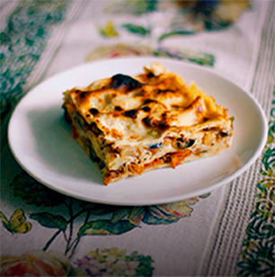

7лучших рецептов недели

утиные ножки с овощами и грудинкой фасолью
говядина, масло топлёное, лук репчатый, морковь, редька, перец сладкий, помидоры, томат-пюре, картофель, чеснок, бульон мясной, соль, перец чёрный, зелень петрушки...